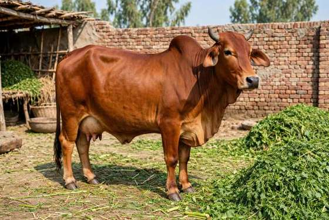
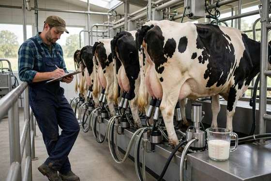
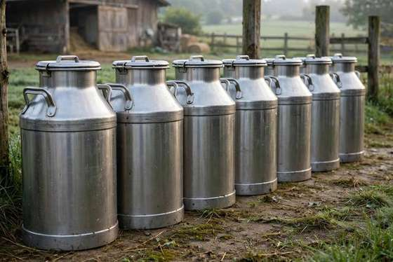
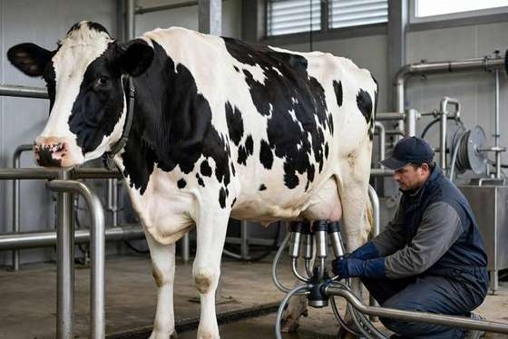
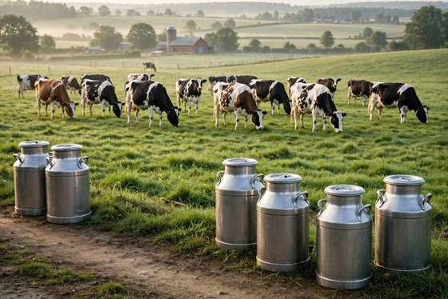
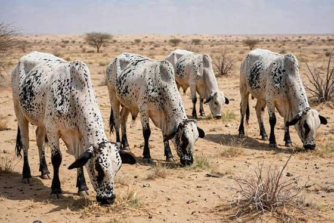
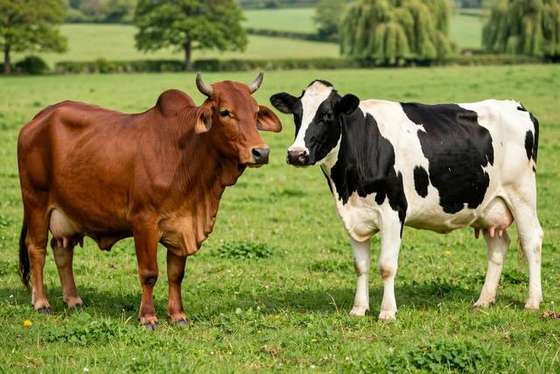
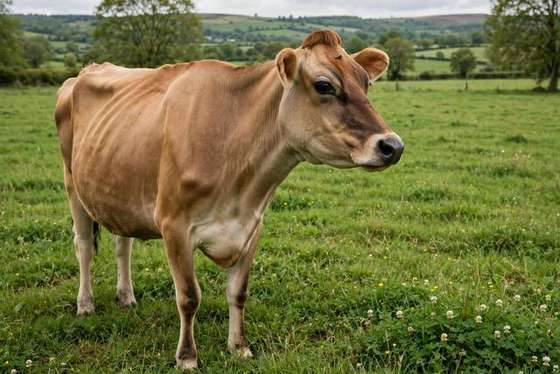
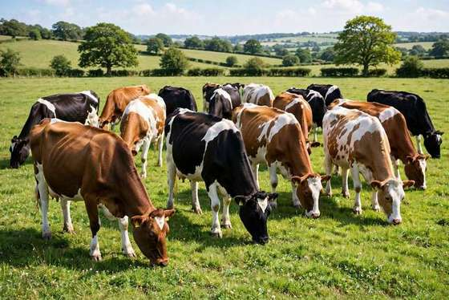
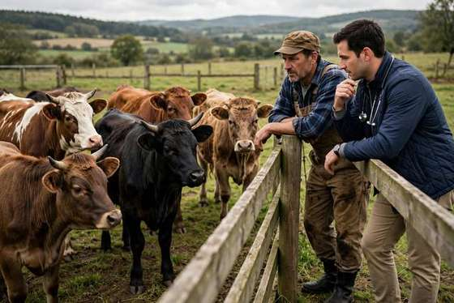

Genetic improvement means choosing superior animals as parents so that every new generation performs better than the last — more milk, faster growth, better fertility and stronger resistance to heat and disease. It is the slowest but most permanent way to improve a herd: better feeding helps one animal, but better genetics help every calf born afterwards.
This guide explains how breed improvement works, what to improve (milk, meat and reproduction), how to build heat and disease resilience, and how crossbreeding creates new, better-adapted breeds — with examples from Sahiwal, Holstein Friesian, Cholistani and Jersey cattle.
Why Improve Genetics — Goals for the Modern Farm
The world needs more milk and meat from fewer animals, on hotter and drier land. Genetic improvement is how livestock keep up. Every breeding decision should aim at one or more of these goals.

Sahiwal — Pakistan's premier heat-tolerant dairy breed
1
Higher productivity per animal(More milk or meat from each animal — the cheapest way to raise farm income)
Climate adaptability(Animals that keep producing in heat, humidity and changing seasons)
4
Disease resistance(Genetically healthier animals need fewer treatments and live longer)
5
Feed efficiency(More milk or growth from the same feed — vital where fodder is scarce or costly)
Milk, Meat and Reproductive Performance
Improvement starts with measuring. A farmer who records milk yield, growth and calving dates can select the best animals; a farmer who does not record is selecting blind.

Milk recording — selection starts with measuring

Full milk cans — the result of good genetics and feeding
Milk performance: record daily milk yield and lactation length. Select daughters of cows that milk well for many lactations, not just one good season.
Meat performance: record birth weight, weaning weight and daily weight gain. Fast-growing, well-muscled calves from healthy dams are the future beef animals.
Reproductive performance: record age at first calving (target 24 to 30 months in cattle), calving interval (target 12 to 13 months) and services per conception (target 1 to 2).
Balance matters: selecting only for milk can weaken fertility and health. A good breeding programme improves production and reproduction together.

Holstein Friesian — the world's highest milk producer

Performance is measured — milk cans tell the story
Heat, Disease and Climate Resilience
An animal that cannot cope with its climate will never reach its genetic potential, however good its pedigree. In Pakistan and other hot regions, heat tolerance is as valuable as milk yield.
Heat tolerance(Zebu breeds such as Sahiwal and Cholistani have loose skin, short coats and efficient sweating — they keep eating and milking in summer)
2
Tick and parasite resistance(Local breeds resist tick-borne diseases such as babesiosis and theileriosis far better than pure exotic breeds)
3
Disease resistance(Selecting animals that rarely fall sick builds a naturally healthier herd over generations)
4
Survival on local feed(Adapted breeds maintain body condition on coarse fodder where exotic breeds lose weight and stop cycling)

Cholistani cattle — bred for desert heat and scarce fodder
Important: importing a high-yielding exotic breed without shade, cooling and good feed usually fails. Match the breed to the farm's climate and management — genetics only work when the environment allows them to.
Crossbreeding and Development of New Breeds
Crossbreeding mates two different breeds to combine their strengths. The crossbred calf often outperforms both parents — a benefit called hybrid vigour (heterosis) — especially for fertility, survival and growth.
Crossbred cow — exotic milk yield with local hardiness
1
Sahiwal × Holstein Friesian(The most popular dairy cross in Pakistan — higher milk than Sahiwal, tougher than pure Holstein)
2
Cholistani × Holstein Friesian(Combines desert hardiness with exotic milk genes — suited to Cholistan and similar regions)
3
Jersey crosses(Jersey semen adds milk fat and smaller, efficient cows — useful where milk is sold by fat content)
4
Developing a new breed(Repeated planned crossing, followed by selection over generations, can fix a new breed type — this is how many modern breeds were created)

Sahiwal vs Holstein Friesian — local hardiness vs exotic milk yield

Jersey — smaller cow, rich high-fat milk
Crossbreeding rules: always use semen from a tested, proven bull; keep exact records of every cross; do not cross back to the same exotic breed every generation, or heat tolerance and disease resistance are lost. A planned rotation of breeds keeps hybrid vigour alive.
How Genetic Progress Works — In Simple Terms
Genetic progress depends on four things. Understanding them helps every farmer and student see why some herds improve fast and others never change.

The goal — a uniform, healthy, high-performing herd

Strict selection — breed only the best, and the herd improves faster
Selection intensity: how strictly parents are chosen. Breeding only the top 10 percent of cows improves the herd much faster than breeding the top 50 percent.
Generation interval: the average age of parents when their calves are born. Shorter intervals — breeding heifers young and replacing bulls on time — spread superior genes sooner.
Accuracy of selection: choosing parents on real records and proven performance, not on looks alone. Genomic testing now raises accuracy further.
Genetic variation: a herd needs diversity to improve. Inbreeding removes variation and slows all progress.
Genetic improvement is a long game: visible change usually takes two to three generations, about 6 to 10 years in cattle. But the gains are permanent and compound — they are inherited by every calf born afterwards.
⚠ Important Tips:
Record milk, growth and fertility — selection without records is guessing.
Use AI semen from proven bulls to bring the best genetics to a small herd.
Protect local breeds — Sahiwal and Cholistani genes are irreplaceable national wealth.
Never sacrifice fertility and health for milk alone — a cow that does not conceive gives no milk at all.
Genetics need good feeding and management — a superior calf on poor feed will never show its potential.
Frequently Asked Questions
What is genetic improvement in livestock?
Genetic improvement is the planned selection of superior animals as parents so that each generation performs better than the last — more milk, faster growth, better fertility and stronger disease resistance. It works through selection within a breed, crossbreeding between breeds, and modern tools such as artificial insemination and genomic testing.
What is crossbreeding in cattle and why is it used?
Crossbreeding mates animals of two different breeds, for example a Holstein Friesian bull with a Sahiwal cow. The crossbred calf often performs better than either parent — a benefit called hybrid vigour — combining the high milk yield of the exotic breed with the heat tolerance and disease resistance of the local breed.
Which dairy cattle breed gives the most milk?
The Holstein Friesian is the world's highest milk-producing breed, often giving 8,000 to 10,000 litres or more per lactation under good management. Jersey gives less milk but with higher fat content. In hot climates, Sahiwal and Sahiwal crosses perform better because they tolerate heat and resist local diseases.
How long does genetic improvement take in a herd?
Genetic progress is steady but slow: noticeable improvement usually appears within two to three generations, about 6 to 10 years in cattle. Progress is faster when only the best animals are bred, generation interval is short, and proven semen or genomic selection is used. Good feeding and management must accompany genetic improvement.
What is the difference between selection intensity and generation interval?
Selection intensity means how strictly parents are chosen — breeding only the top 10 percent of cows improves the herd faster than breeding the top 50 percent. Generation interval is the average age of parents when their calves are born; shorter intervals mean faster progress, because superior genes spread sooner.
Which is the best cow breed for hot weather in Pakistan?
Sahiwal is the best local dairy breed for Pakistan's heat — it tolerates high temperatures, resists ticks and local diseases, and produces good milk on local feed. Sahiwal crossed with Holstein Friesian gives more milk while keeping much of the heat tolerance. Pure exotic breeds suffer badly in summer without cooling.
Can crossbreeding improve my local cows?
Yes. Crossing local cows with semen from a proven exotic bull usually produces daughters that give more milk and grow faster, while keeping local hardiness. Use AI with semen from a tested bull, keep records of the cross, and avoid crossing back to the same exotic breed every generation, or heat tolerance is lost.
نسل کی بہتری سے کیا مراد ہے اور ساہیوال نسل کیوں اہم ہے؟
نسل کی بہتری کا مطلب ہے بہترین جانوروں کو والدین بنا کر ہر نئی نسل کو پہلے سے بہتر بنانا — زیادہ دودھ، تیز نشوونما اور بیماریوں کے خلاف قوت مدافعت۔ ساہیوال پاکستان کی بہترین مقامی دودھ والی نسل ہے جو گرمی برداشت کرتی ہے، بیماریوں سے محفوظ رہتی ہے اور مقامی خوراک پر اچھا دودھ دیتی ہے۔
Key Takeaway
Genetic improvement is the most permanent investment a farmer can make: select the best, record everything, cross wisely, and protect the local genetics that survive your climate. Progress is slow, but every generation builds on the last — and the gains belong to the herd forever. Follow current local veterinary authority guidance for breeding regulations and disease testing.